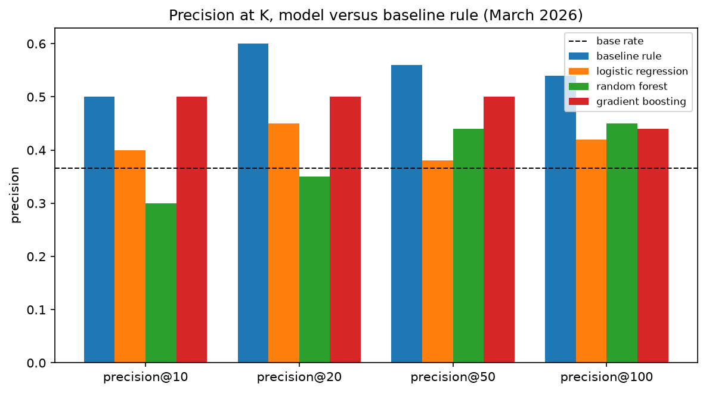
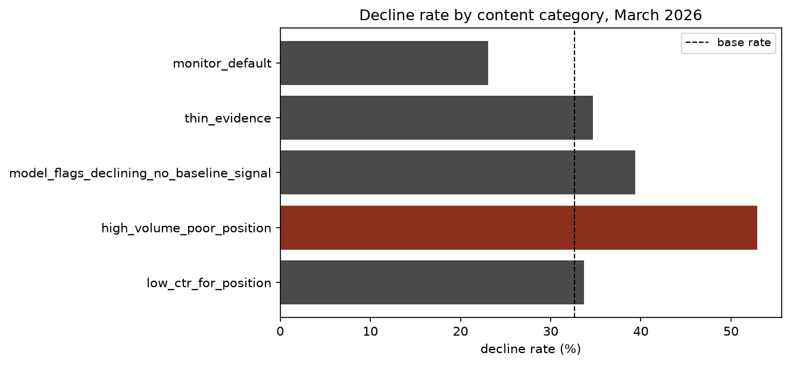

Abstract
FlyRank publishes and maintains content directly on client websites, and that content predictably loses search visibility after publication as rankings and clicks fall over time. With far more pages needing review at any moment than a team can examine individually, the operational question is which pages to review first. This paper uses FlyRank's pseudonymized internship warehouse, 9.8 million daily search-performance rows across 44 clients drawn from one month (March 2026), to build a transparent rule based on click-through rate and search volume, and to test three learned models (logistic regression, random forest, gradient boosting) against it under a client-grouped validation split. None of the three models outperformed the rule at any evaluated cutoff, and the strongest model's held-out ROC-AUC (0.58) was only marginally above chance. The rule, and a five-category action list derived from it, form the basis of this paper's content-review recommendations; the underperforming models do not. The intended use is decision support for a human reviewer, not an automated decision.
1.Introduction
FlyRank operates as a content-as-infrastructure platform: it researches, writes, and publishes content onto client websites, then monitors search performance and optimizes over time. A structural consequence of operating at this scale is that a team managing many clients' content has more candidate pages for review than time available to review them individually. In the data studied here, an average client has hundreds of pages that could plausibly need attention in a given cycle. FlyRank's existing product already addresses part of this with hand-written flags, such as a health score and quick-win tags: rule-based logic that runs in production but is built from thresholds chosen by hand rather than learned from data.
This paper asks a narrow, testable question inside that gap: does a learned ranking model improve on a comparably transparent, hand-written rule for deciding which pages to review first? The operative question for any given page is not whether it is declining in the abstract, but whether it belongs near the top of a reviewer's queue, and why.
This is a ranking problem rather than a classification problem, and the distinction matters for evaluation. A model that separates classes well on average is not necessarily useful if its highest-ranked pages are wrong more often than a simple rule's highest-ranked pages. That comparison, precision at a fixed cutoff rather than accuracy over the full population, is the central test in this paper.
The decision under study: given an existing pool of content, rank pages by demand and by risk of decline, attach a reason a reviewer can check quickly, and produce a queue sized to realistic review capacity.
2.Data
The dataset is the FlyRank/internship-warehouse release on Hugging Face, a
gated and pseudonymized production search dataset. This study uses
fact_content_daily_performance, filtered to the month=2026-03
partition, a mid-panel month chosen deliberately. The release's final month (June 2026) is
a sealed holdout for this internship track and was not queried in the course of this work.
| 9,841,378 | daily rows, March 2026 |
| 44 | pseudonymized clients |
| 150,675 | client–page pairs with recorded impressions |
| 0 | duplicate grain keys, verified directly |
Grain. One row corresponds to one client, content item, and day, confirmed by grouping on the full key and checking for duplicates. Window. The month is split at day 15: days 1 through 15 form the feature window and days 16 through 31 form the label window. This gives a genuine past-to-future split within a single month, rather than a same-window construction.
Excluded fields, and the reason
- GA4 engagement columns. Only 4.2% of March rows have
ga4_data_available = TRUE. A raw GA4 feature would largely encode whether a client has GA4 configured, not engagement itself. - Any raw name, domain, URL, or query. None appear in the release. Only
pseudonymous hash identifiers (
client_hash_id,content_hash_id) are used, and only for grouping and joins, never as model features. - FlyRank's own product flags (health score, quick-win tags). Not included in this dataset by design. Using a product's existing decision flag as a model feature would be circular: the model would learn to reproduce an existing rule rather than identify an independent pattern.
3.Methodology
Label
is_declining = imp_last < 0.8 × imp_prev, where imp_prev
sums Search Console impressions over days 1 through 15 and imp_last sums them
over days 16 through 31. This is a proxy for declining visibility rather than a confirmed
outcome measured across months, but it is a genuine past-to-future split rather than a
same-window construction.
Features
Five features, computed only over the feature window:
imp_prev,clk_prev: impressions and clicks, days 1–15ctr_prev: clicks divided by impressions, days 1–15avg_position_prev: mean Search Console position, days 1–15active_days_prev: number of days with any impressions, out of 15
imp_last is never used as a feature; it is used only to construct the label.
Baseline
A transparent rule: score = imp_prev × max(0, expected_ctr_for_position_tier
− ctr_prev), applied only where imp_prev ≥ 100 and
0 < avg_position_prev ≤ 20. Two signals underlying the rule were tested
against the label before it was adopted.
| Signal | Comparison | n | Result |
|---|---|---|---|
| CTR relative to position | 33.7% decline rate (low CTR) vs. 20.4% (high CTR) | ~31,000 each | confirmed |
| Prior search volume | 40.2% decline rate (lowest tercile) to 28.3% (highest tercile) | 150,675 | confirmed |
Models
Logistic regression and random forest are the primary comparison models, with gradient boosting included as an additional check. All three use the same five features and are evaluated with precision at K rather than accuracy, since the underlying decision concerns the top K candidates for review, not classification of the full population.
Validation design
GroupShuffleSplit on client_hash_id: a grouped split, not a random
split by row. A random row split would allow the model to see other pages from the same
client during training, risking memorization of client-level characteristics rather than
the intended pattern.
Leakage checks
The feature and label windows were checked directly for overlap: features are computed only
from the window preceding the label. The row-selection filter (imp_prev > 0)
uses only the feature window. No product-decision flags are used as features. A direct test
was also run: the exact ratio used to construct the label was added to the feature set, the
held-out score rose accordingly, and it returned to the baseline value once the feature was
removed.
Random forest test ROC-AUC: 0.578 without the added feature, 1.000 with it included, and 0.578 again once it was removed. This is the expected signature of label leakage, and its absence in the final feature set was confirmed by this test.
4.Results
The central result of this study is negative. On the grouped test split, none of the three trained models outperformed the baseline rule at any evaluated cutoff; the rule matches or exceeds every model at every value of K tested.
| Method | P@10 | P@20 | P@50 | P@100 |
|---|---|---|---|---|
| Baseline rule | 0.50 | 0.60 | 0.56 | 0.54 |
| Logistic regression | 0.40 | 0.45 | 0.38 | 0.42 |
| Random forest | 0.30 | 0.35 | 0.44 | 0.45 |
| Gradient boosting | 0.50 | 0.50 | 0.50 | 0.44 |
Test base rate: 0.366 (14,426 rows, 11 held-out clients). Random forest held-out ROC-AUC: 0.578.

Added model complexity did not improve on the rule under these conditions. Five features and eleven held-out clients were not sufficient for a learned model to outperform a rule built on two previously confirmed signals. This result is reported directly rather than reinterpreted, on the view that a well-measured null result is more useful than an inflated positive one.
5.Limitations
- Single month. All results are drawn from March 2026 only and have not been checked against a different month, a different season, or the sealed final month.
- Proxy label.
is_decliningis a within-month ratio of impressions and has not been validated as an outcome measured across months. - 44 clients, one lane. These results have not been tested on other clients, other verticals, or alternative scoring approaches.
- Limited evidence for roughly half the data. Approximately half of all rows have fewer than 15 of 15 active days in the feature window. This reflects the underlying traffic distribution rather than a data quality problem, but it means these rows cannot be scored with the same confidence as the rest.
- Decision support, not a causal claim. A recommendation to review a page is not equivalent to a claim that refreshing it will recover lost traffic. Establishing that would require a controlled experiment, which this cross-sectional dataset cannot provide.
- Retrospective evaluation. The rule and the models in Section 4 are fit and evaluated on the same month as a demonstration of method, not as a forecast of future performance.
- The model did not outperform the baseline. This is reported as a substantive finding of the study, not as a limitation to be explained away.
6.Recommendations
Five categories, each associated with one recommended action, derived from the baseline rule and the model evaluated in Section 4. No additional clustering was introduced for this section.
| Category | n | Decline rate | Action | Tier |
|---|---|---|---|---|
low_ctr_for_position | 30,974 | 33.7% | review_ctr_fix | 1 |
high_volume_poor_position | 3,372 | 52.9% | flag_for_deeper_review | 2 |
model_flags_declining_no_baseline_signal | 7,682 | 39.4% | monitor_closely | 3 |
thin_evidence | 76,142 | 34.7% | wait_for_more_data | 4 |
monitor_default | 32,505 | 23.1% | monitor | 5 |

high_volume_poor_position category has the highest
measured decline rate of the five (52.9%, against a base rate of 32.6%). An earlier
analysis of individual model errors suggested, on the basis of three examples, that pages
in this category were unlikely to decline further. Measured against the complete
category (n = 3,372), that does not hold, and is corrected here.Required human review
- A flag indicates that a metric pattern looks unusual, not why. A reviewer should check whether the query is branded or navigational, whether a competitor's snippet is capturing the click, and whether the content itself has degraded.
- Consolidation, seasonality, and noise should be ruled out before a decline is treated as real and specific to the page.
Exclusions from automation
- Rewritten titles or snippets should not be published without review. A flagged page is a candidate for editing, not a change ready to ship.
- Pages should not be pruned, redirected, or deleted automatically on the basis of this queue. These actions are largely irreversible and require a content-strategy decision this data does not support.
- Model probabilities and rule scores should not be treated as evidence of cause. Both are used only to rank candidates for review, and Section 4 shows the model underperforming the rule in this setting.
- No client name, URL, domain, or query should appear in any report produced from this work.
7.Reproducibility
Each number in this paper is drawn from a committed notebook or a committed metrics file.
Random seeds are fixed at 42 throughout and stated in each notebook.
Re-running any notebook against the same month=2026-03 partition reproduces
the tables in this paper.